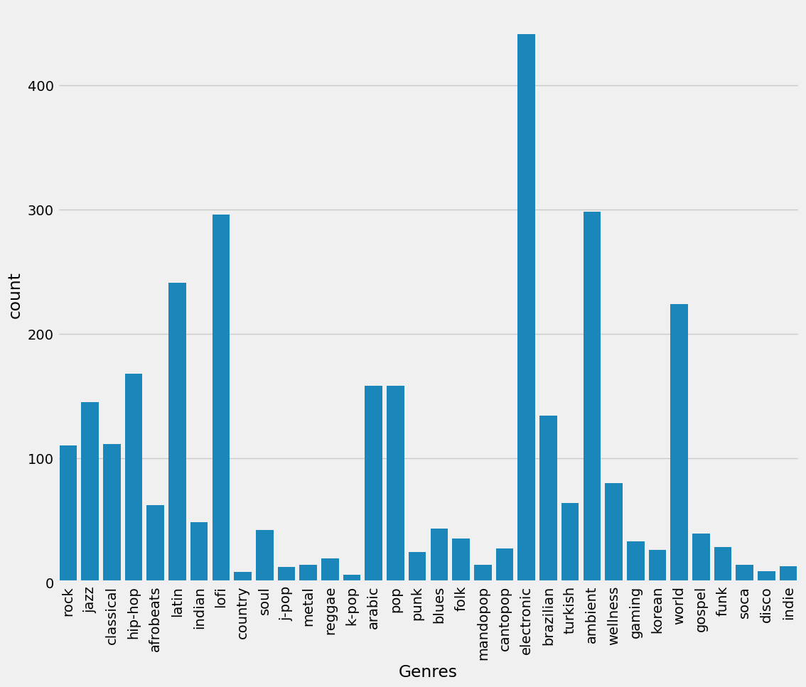

Introduction
Can the genre of music be determined by the quilities if the sound?
The project uses the qualities of the sound to determine the genre of music. I aim to create a classification model that can determine the genre of music based on these qualities.
Data Source
Spotify Music DatasetThe dataset is a compilation of songs that are in Spotify playlists. It includes the qualities of the sound such as tempo, danceability, valence, and loudness. It also inlcudes a lof of data about the song such as genre, artist, track popularity, and duration as well as more technical information such as track id, uri, and api stuff.
Data Pre-processing
For the data preprocessing, I removed all the columns that were not required for the model. This includes data that identifies the song on spotify such as href, id, uri, etc. I removed the very few null entries in the dataset.
The columns that I kept are:
- Time Signature
- Spechiness
- Danceability
- Energy
- Valence
- Key
- Tempo
- Loudness
- Acousticness
- Liveness
- Track Popularity
- Duration
Music Qualities include:
Visualizations
Genre Count
This chart show the distribution of genres in the dataset. Electronic music is the most popular genre followed by ambient, lofi, latin, and world.
Model
I created a classification model using the following algorithms:
- Decision Tree
- Random Forest
- K Nearest Neighbors
Impact
This project shows that there is a correlation between the qualities of the sound and the genre of music. Though in these circumstances, the model was not able to perform well, in a real world setting, the model could be used to determine the genre of music based on the qualities of the sound.
References
Code
Takeaways
This project has taught me more about classification models and the how to understand the metrics of a classification models.